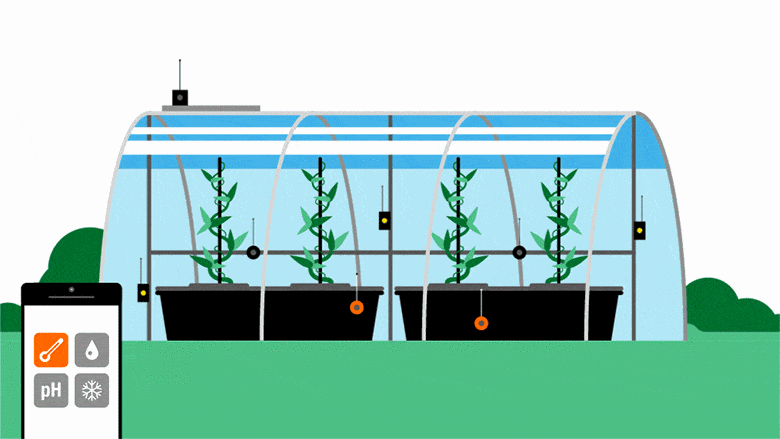

Applications of IoT
- Health Care-

- The resources that current medical research uses, lack critical real-world information. IoT opens ways to a valuable data through analysis, real-time field data, and testing.
- Smart City-
- The new IoT applications are enabling Smart City initiatives worldwide. It provides the ability to remotely monitor, manage and control devices from real-time data.
- Industrial Automation-
- With IoT Applications, one could re-engineer products and their packaging to deliver better performance in both cost and customer experience.

- Factory Digitalization
- Product flow Monitoring
- Inventory Management
- Safety and Security
- Quality Control
- Packaging optimization
- Agriculture-

- Population to reach 10 billion by the year 2050. To feed such a massive population one needs to marry agriculture to technology and obtain best results. There are numerous possibilities in this field.
One of them is the Smart Greenhouse.
« Previous
Next »